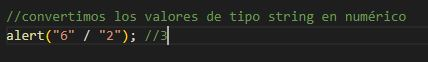
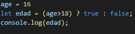
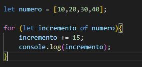
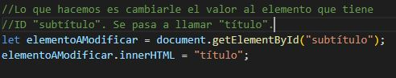
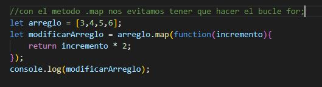

Forma 1: vinculando el html con el archivo JS


Desde el body
Desde el head
Forma 2: insertando contenido de JS dentro del html


Desde el body
Desde el head
Las variables en JS se declaran con var, let o const. Para asignar una variable con const se le debe de dar un valor en la misma linea de codigo en la que se declara.
Existen 8 tipos de datos:
Las expresiones regulares en JS son caracteres en cadena que forman un patrón de busqueda. Existen dos formas de crear expresiones regulares en JS, usando notación literal (patron entre barras), que proporcionan la compilación de la expresión regular cuando se carga el script. O con el constructor de objeto (RegExp), que proporciona una compilación en tiempo de ejecución de la expresión regular. Otro componente importante para las expresiones regulares son las banderas: indicadores que habilitan funciones en la definición del patrón de la expresión regular. Por ejemplo:

Diferentes formas de clarar funciones en JS:
Los operadores son los que nos permiten modificar el valor de las variables, realizar calculos matemáticos con sus valores y compararlos. Con los operadores, podemos realizar, entre otras cosas, cálculos matemáticos complejos. Por ejemplo, uno de los más comunes y que todos hemos utilizado es el de agisnación (=): num1 = 3. Otro muy común es el de asignación de adición (+=): num1 += 7.
La conversión entre tipos de datos es, en pocas palabras, el cambio automático del valor de un dato a su tipo correcto. Estas conversiones se utilizan, por ejemplo, en divisiones. 
Dejando de lado las típicas estructuras de control como el if con else, while, for, etc. Voy a mostrar otra forma en la que se puede utilizar un if y el for. El primero es un if de una sola línea, que tiene la desventaja de mostrar un solo valor. Si tenemos la idea de comparar los dos numeros en otro momento, no lo vamos a poder hacer si antes utlizamos este if. El segundo es un for...of, que ejecuta un bloque de código para cada elemento de un objeto iterable, como lo son: String , Array, entre otros.
 El elemnto DOM (Document Object Model) representa todos los elementos que pueden ser encontrados en nuestra página web, ya sea encabezado, título, pie de página, botones, imagenes, etc. El DOM puede ser manipulado desde JS, seleccionado los elementos HTml (ID, class, etiqueta). Ejemplo de cómo podemos modificar un elemento html mediante el elemento DOM. 
El object.map es un método incorporado con el que podemos repetir un arreglo y modificar sus elementos utilizando una función callback, la cual se ejecuta en cada uno de los elementos del arreglo
El evento en JS es el que permite la interación que tiene el usuario con la página web. Cada que uno toca un botón o tecla específica se produce un evento. JS trabaja con 11 tipos de eventos: Relacionados con el ratón, Relacionados con el teclado, Relacionados con formularios, Relacionados con ventanas o frames, Relacionados con animaciones y transiciones, Relacionados con la batería y carga de la batería, Relacionados con llamadas tipo telefonía, Relacionados con cambios en el DOM, Relacionados con arrastre de elementos (drag and drop), Relacionados con video y audio, Relacionados con la conexión a internet.